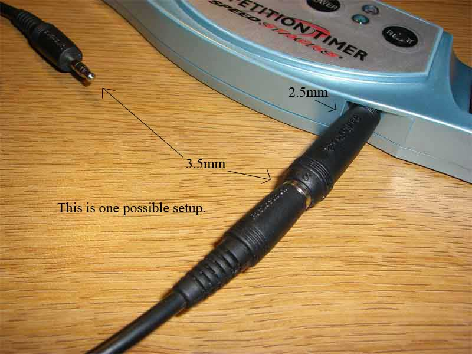

FAQs
Q: Why does it say: "The jar file "CALCubeTimer.jar" couldn't be launched. Check the Console for possible error messages" or "The main class could not be found"?
A: See this.
Q: Why can't I start the timer with my keyboard?
A: Make sure you've checked the box next to "Use Keyboard Timer". Also, make sure that the stackmat emulation option (Configuration > Options (Cont.))
is disabled unless you want to use it.
Q: Does this program run on Mac OS X?
A: Yes, but not without a little work, see this.
Q: Why can't I change my scramble customization or scramble length?
A: See this.
Q: When using the keyboard, the program behaves as if I am starting and stopping the timer over and over again, giving me a bunch of 0.01 second times.
A: This is a known issue with X in Linux. This problem should be solved in version 0.2.
One temporary workaround is to disable key repeat using the
command "xset -r".
Q: How do I start the server?
A: If you are using Internet Explorer, the file may have downloaded as
CCTServer.zip. First change the extension to CCTServer.jar.
Then, from the command line, cd into the folder you downloaded the jar to,
and type "java -jar CCTServer.jar [password]".
Q: How do I get my Stackmat to work?
Under File > Configuration > Stackmat Settings, make sure the correct mixer is
chosen. If necessary, read this and this.
Q: When I plug my Stackmat in, CCT displays 15:165:165!
A: This means that your soundcard is inverting the signal, or part of the signal is not being read correctly.
Go to File > Configuration > Stackmat Settings and experiment with checking
the three boxes. Most people have either all of them checked or none of them
checked, however, it is possible that you may need some other combination
of the three.
Q: What is the stackmat value?
A: This value is the key to how we convert the Stackmat signal into
the corresponding numerical time. We interpret the signal as a sound wave, and
it comes in looking something like this:

We need to discretize these peaks and troughs into 1's and 0's. This
should be pretty easy to conceptualize, but the programming is
tricky because these peaks and troughs are not at all uniform.
The "stackmat value" is a value we use to chop off the peaks and
troughs and convert the signal to ones and zeroes.
So it would make sense that if the value is too high, no peaks or
valleys will be detected, and the program will see nothing but
zeroes.
However, If the value is too low, noise will be introduced when it shouldn't
be. This is due in part to the fact that the tops of the peaks are not flat.
We've found that a value around 50 will work on most computers, but
some tweaking may be necessary to achieve the best performance with your specific
setup. Don't be afraid to change this value! We have
seen stackmat values from 29 up to 70. Some people have reported values as low as 1 to 7.
A way to find your value is to find a value for which the timer changes times when it is being run.
If the times do not update as frequently as it should, then your value is too high. If the times
sometimes show very large times over 10 minutes, then your value is probably too low.
The signal is most difficult to interpret when one hand is on the timer, so it is best to test your value
while running the timer with a hand on one of the pads.
Q: What is the sampling rate?
A: The sampling rate is the same rate talked about regarding audio recording. A value of 44100 Hz indicates that CCT
will record 44100 samples per second. Each sample does not correspond to a time from the timer, it takes many samples
for CCT to read the current time from the display. The lower the sampling rate, the less processing power CCT will use. Sampling rates as low
as 8000 Hz have successfully been tested.
Q: I've played with the stackmat value, sampling rate, and I've tried inverting my signal,
and I still can't get my stackmat to work!
A: It is our goal to get CCT to work with every stackmat on every computer. We know that there are certain
combinations of OS and soundcard that have failed to work with CCT. If you have had no luck setting up CCT,
download CCT-Diagnostics.jar from here. Plug in your stackmat and turn it on.
Then run CCT-Diagnostics.jar. It should run for about one second, then close down. It will create a file
called cct0.stats (or cct1.stats if it exists). Open this file up with a text editor. If it contains two columns of
numbers, then please email it to cubetimer@gmail.com with a description of
your problem. Also contact us if you have any trouble with the diagnostics program. With your help, hopefully
we will get CCT working on your computer.
Java 1.6
You need the latest version of Java (SE 6) to run CCT. Here's what you need to do to get the right version for your OS.
Windows and Linux users can find Java SE 6 here. You want the Java Runtime Environment (JRE) 6.
Macs however, are a little more complicated. For some reason, Apple is developing SE 6 as opposed to Sun.
To get Java 6 for OSX, you need to go here and click on Java SE 6.0 Release 1 Developer Preview 6. You'll have to sign up, and then you can download Apple's latest version. It has been tested, and seems to work fine.
UPDATE: Apple has finally released Java 6. Unfortunately, according to this article, their JRE will only run on 64 bit Intel Macs.
To verify that the installation was a success, go to the top right of your screen, and click on the search button. Type "terminal" and open it. Once there, type "java -version" and press enter. You should get a result similar to this:
java version "1.6.0-dp"
Java(TM) SE Runtime Environment (build 1.6.0-dp-b88-34)
Java HotSpot(TM) Client VM (build 1.6.0-b88-17-release, mixed mode, sharing)
If it still says 1.5, then go to Finder > Applications > Utilities > Java > Java SE 6 > Preferences. Then in the Java launcher pane, drag Java 6 to the top of the list. Thanks to Joey Gouly for this fix!
Stackmat Support
Hopefully, you are pretty excited about pluging your stackmat into your computer (we were!) Here's what you need to get it working:
- 1 2.5mm to 3.5mm stereo plug adapter ~$2-3
- 1 male to male stereo cable ~$5
You should be able to get these from a local electronics shop, or online. Here's a picture of our setup.
User Interface
In CCT 1.0, we've made the GUI completely customizable via xml files. In your CCT directory, there should be a folder called "guiLayouts". Within that folder, you can create any *.xml file, and CCT will give you the option to load that layout. Some rudimentary knowledge of Java Swing and XML files is required to accomplish anything complicated, however it should be easy for a semi-techinical user to modify the text on various buttons and labels throughout CCT. All of the text applied to components will be interpreted as Dynamic Strings. Buttons and checkboxes can be made to do something when clicked by giving them one of the Action Attributes. There are also a number of Persistent Components that are built into CCT. Persistent components provide the underlying functionalities of CCT that can't be represented simply by an action attribute. Look at cct.xml to learn how to create your own layout. Feel free to improve upon the default layout! If you've done something particularly cool, let us know and we may put it up for download alongside CCT. If there are any features you feel are missing, contact us, and we'll try to add them.
Some of the interface options from CCT v0.2 have been removed, others have been tweaked.
The first of these options is Integrate Timer and Display. What this does is convert the display (0:00) to the button that starts and stops the timer.If the "integrate" option is selected, then the "Annoying status light" will convert the entire display into a status color which tells you the status of the button. If the status is green, then the button is held down and ready to start/stop. If the button is red, then the button is focused but no key is pressed. If the button is gray, then the button is not focused. This color behavior is by default the same as the start timer button (either integrated or not).- The less annoying status light will be green if the timer is focused, signaling that it is okay to start. If the light is red, then you cannot start keyboard timing until you click on the timer.
- The "hide scrambles when timer not focused" option will change the color of the scrambles so that if the button is not focused, it is difficult to read the scrambles.
- Now it is possible to select the length of the scramble with the spinner next to the scramble type.
- The scramble number is next to the scramble length. This is used to control which scramble you are on. One possible use is the following: Let's say you are in the middle of Sunday Contest and you have imported the scrambles. You are on the 6th scramble, and the stackmat accepts a fake time. You finish your solve and discard your fake time. CCT now believes you just finished the 7th solve and displays the 8th scramble. To fix this problem, all you need to do is rewind one scramble to the 7th and you don't lose your 7th scramble.
- UPDATE: As of CCT 1.0, the scramble history will keep track of every scramble you use, even if you switch scramble customizations. To avoid confusion when going back in your scramble history, the scramble customization dropdown box will be disabled whenever you are not at the latest, non-imported scramble.
- A new option for scrambles is the multi-slice option. This affects NxNxN cubes where N ≥ 4.
If multi-slice is enabled (which is the default), then "r" means turn the outer 2 layers. If multi-slice is disabled, then "r" means turn only the inside slice.Scrambles obey the 2008 WCA regulations.
Times Table
All of your times for a particular session are added to a table on the right hand side of the gui. This table can display your rolling average 0 (RA 0), RA 1, comment, and tags for a particular solve. Just right click on the header towards the top of the table to control which columns are visible.
Solve Tags
For each solve, you can apply either of two penalties: a two second penalty (+2), or a DNF. Of course, you may choose to have no penalty. In addition to these two penalties, CCT allows you to define your own tags and apply them to solves. Tags can be anything you might find useful to know, such as POP, PLL skip, or OLL skip. The really cool part of custom tags is that CCT will keep statistics for each tag you've defined, such as total number of solves with that tag, or percentage of all solves with that tag. See Dynamic Strings to find out how to access these tag statistics.
Sessions Table
The sessions table allows access to every session you've ever done with CCT (if you're using a profile with logging enabled). The current session is highlighted in green. By right clicking on the table header, you may choose to see the customization, session average, best RA 0, best RA 1, best time, standard deviation, solve count, and comment for each session. You can even sort the table by these attributes.
Sunday Contest
Not only is there support for importing scrambles from file, there is an option to import times from url. This is perfect for a situation such as the Sunday Contest. CCT also supports submission to the new, automated Sunday Contest. Just click the "Submit Sunday Contest" button.
In addition, CCT allows you to setup an email (SMTP) server, to allow emailing of times. This may not work if your ISP blocks port 25. If you choose not to set up an SMTP server, CCT will attempt to use your default mailto: handler.
UMTS
The old client/server stuff from CCT 0.1 and 0.2 has been replaced with an IRC client. Just connect to any IRC server, and /join a channel. You can chat will regular IRC users, but you can also see the statistics of other CCT/IRC users in the channel with you!
It works by simply connecting to an auxiliary channel behind the scenes for each channel you connect to for chatting. CCT uses that auxiliary channel for tranmitting userstates between CCT/IRC users. For example, if you type "/join #hiya", CCT will also connect to #hiya-cct to communicate status updates with other CCT users on #hiya. If there are any problems with #hiya-cct (such as a password or getting kicked), CCT will automatically fall back to #hiya-cct1, #hiya-cct2,... until it finds a working channel. You can see the chat channels and auxiliary channels you're connected to at the bottom of the CCT/IRC client gui. If you find that someone is on the same chat channel as you, but a different auxiliary channel, you will not be able to see their times. If you want to change your auxiliary channel for a particular chat channel, just type "/cctstats #AUXILIARYCHANNEL" into that chat channel.
You can get a full list of available IRC commands by timing "/help" into any chat field. There are also a few keyboard shortcuts you can use to make your IRC usage more fluid. NOTE: c is control, a is alt, s is shift, # is a number key
| Shortcut | Alternative 1 | Alternative 2 | Action |
| c-tab | c-n | a-right | Go to next tab |
| c-s-tab | c-p | a-left | Go to previous tab |
| c-# | a-# | Go to nth tab | |
| c-m | Maximize/restore current tab | ||
| c-q | Close current tab | ||
| page up | a-p | Scroll up message pane | |
| page down | a-n | Scroll down message pane | |
| up | Go back in chat field history | ||
| down | Go forward in chat field history | ||
| c-backspace | c-w | Delete previous word | |
| c-delete | Delete next word | ||
| c-h | Delete previous character | ||
| c-left | Go to next word | ||
| c-right | Go to previous word | ||
| escape | Clear chat pane | ||
| c-c | Copy the selection from the chat field | ||
| c-x | c-u | Cut the selection from the chat field | |
| c-v | c-y | s-insert | Paste into the chat field |
| c-home | Go to top of message pane | ||
| c-end | Go to bottom of message pane | ||
| tab | Find next auto completion for command | ||
| s-tab | Find previous auto completion for command |
CCTBot
There is also an IRC bot called cctbot that will provide scrambles in a URL-like format when asked. cctbot will respond to any message beginning with an exclamation mark (!). CCTBot uses the same scramble plugins that CCT uses to generate scrambles. Just type !3 to request a single 3x3x3 scramble. You can also type something like !3*12 to request twelve 3x3x3 scrambles, perfect for racing someone online! By clicking on any of those tweleve scrambles, CCT will automatically import all of them. Just wait for cctbot to finish sending them before you try to import them.
Running your own cctbot requires just a little command line experience. Just download CCTBot and run the included jar file. Make sure you have some scramble plugins available in a "scramblePlugins" folder, otherwise your cctbot will be rather useless. The bot is command line driven, so just double clicking on the jar file won't work. Instead, you'll have to type "java -jar CCTBot.jar" on the command line. CCTBot will then print out instructions for using it. Once CCTBot is running, you can type in commands on the "cctbot: " prompt it gives you. Just type "help" for more detailed instructions on maintaining your cctbot.
If you already have CALCubeTimer.jar on your computer, then you can run CCTBot by typing "java -cp CALCubeTimer.jar net.gnehzr.cct.umts.cctbot.CCTBot", instead of downloading CCTBot.jar.
Configuration
For version 0.2 of CCT, we overhauled the configuration system to make use of
Java's properties files. As a result, configuration files from CCT v0.1 will not
function with CCT v0.2. One of the advantages of the new system is that settings
are now stored in plaintext, meaning that you can edit the "cct.properties" file
with your favorite text editor. The format of the file is very simple, each setting
is on its own line, with a setting name followed by its value. See the
defaults.properties file for a description of each setting. There is no need to edit
the defaults.properties file, just edit cct.properties, as those settings take
precedence over that defaults. If at any point you mess up your cct.properties
file, you can just delete it, and the defaults will be restored.
See Profiling for where CCT stores your properties files.
Profiling
When configured properly, CCT will remember every solve you do, and give you interesting statistics based on those solves
CCT organizes solves into sessions, which are associated with a single scramble customization. You can create multiple sessions and open each one by simply double clicking on it. By default, CCT will discard these sessions when you close it. However, if you create your own profile (for example, Jeremy), then CCT will automatically save every session to a single XML file called "profiles/Jeremy/Jeremy.xml". Within the Jeremy folder, CCT will also store Jeremy.properties, which is the configuration file described in Configuration.
To start a new session, just click the "New Session" button. This will save your current session to the database, and give you a fresh session to work on. To change scramble customizations, use the drop down box. To discard the current session, press the "Clear Session" button.
CCT will remember your last used profile, but there is also the option to load any folder from your filesystem as if it were a CCT profile. Simply pass the folder name as a command line argument to CALCubeTimer. For example: "java -jar CALCubeTimer.jar path/to/profile/"
Backing up a profile
If you've been using CCT for several months and have developed a rather large database of times, CCT will slow down whenever it has to load and save the database. If you want to backup your times in order to upgrade CCT, move to another computer, or to just be safe, you will need to backup your profile's folder from the "profiles" folder in your CCT directory. There is no need to backup the entire "profiles" folder, just the sub folders of interest. You can simply move these folders from your old CCT into your new CCT profiles folder. We will try to refrain from changing CCT's directory structure drastically in future releases.
Scramble Customizations
Since CCT keeps track of sessions by date and scramble customization, there is no way that you could mix up your 3x3x3 times with your 4x4x4 times. But what if you want to do 3x3x3 blindfolded (BLD)? Or one handed? Or one handed and blindfolded?! Clearly there are too many possiblities for them to be hardcoded into CCT. Instead, under Configuration > Scramble Customizations, you can create your own scramble customizations. Scroll down to the bottom, and double click on "Add new customization...". Choose the type of scrambles you want for the new customization (choose X for puzzles that do not require scrambles, such as Magic), and give it a short, descriptive name in the text box (such as BLD or OH). Once you've saved your configuration, you can choose the new scramble customization, and begin recording your times!
CCT will also show two different types of rolling averages up to a certain point in your session in your table of times. The sizes of these two rolling averages can be specified on a per-scramble customization basis. That way, when you're doing Square-1, you may see untrimmed averages of 3 (as per WCA regulations), and when you're doing 3x3x3 speedsolve, you can see trimmed averages of 5.
Scramble Plugins
Inside the scramblePlugins folder are various *.class files. Each of these class files corresponds to a different scramble plugin. Scramble plugins can simply be dropped into this folder, and they should appear when you restart CCT. The scramble plugin system was designed to make it easy for people to add new scrambles to CCT without us having to release a new version. Anyone with a strong background in Java should be able to create new plugins for CCT. Just checkout the CCT sourcecode from here ???, and examine Scramble.java. Writing a new plugin is as simple as writing a subclass of Scramble. See CubeScramble, MegaminxScramble, and SquareOneScramble for examples of how to do it.
A lot of time has been put into ensuring that it is not possible for scramble plugins to harm your computer or freeze CCT, but care should always be exercised when running a scramble plugin from an unknown or untrusted source.
Scramble Area
CCT supports incremental scramble display. If you want to know what the puzzle looks like partway through a scramble, just click on the last move you want to see. The displayed turn will be colored red. There is also an options to display the current state of the puzzle side by side with the final state of the puzzle. Just right click on the scramble image to enable it. You can also copy the current scramble simply by double clicking on the scramble area. The scramble will be copied to the system clipboard in plaintext.
CCT in another language
We want to provide CCT as many languages as possible. If you use CCT and speak another language we would certainly appreciate your help translating the program. Knowledge of Java is not required!
We sought to make translating CCT as easy as possible on those translating it. Internationalization is provided through properties files that contain a bunch of lines of the format "keyword=internationalized text". Whenever CCT prints out some text, it goes to these properties files, and looks for a line starting with "keyword=...". CCT will then print out "...", or whatever is contained there. This means that if you translate every word to the right of every equals sign, CCT will display in your own language. NOTE: The keyword is case sensitive, if you don't copy it exactly, CCT will be unable to find your internationalized text.
To fully translate CCT, you need to translate the files under the languages, scramblePlugins, and guiLayouts folders.
- languages/*.properties (cctString.properites, javax_swing.properties, NOT installed.properties!)
- scramblePlugins/*.properties (CubeScramble.properties, SquareOneScramble.properties)
- guiLayouts/*.properties (cct.properties)
CCT provides you with a dropdown box to select from each of the installed languages. CCT identifies languages by the ending of the file names. Properties files should end in xx_YY.properties. xx is a 2 letter language identifier as defined here. YY corresponds to a 2 letter country code Once you've copied all of the default *.properties files over to *_xx_YY.properties, to get CCT to recognize the new language, you must update installed.properties. installed.properties contains a bunch of lines of the form xx_YY=fooBar, where fooBar is the name of the language, in that language. Simply add your new language to installed.properties to have the drop down option for that language. If a key is undefined for a particular language, CCT will fall back to the default *.properties files to find that key.
Release History:
2007 Apr 15 - Version 0.1- Lots of configuration options! Just about every stupid feature we added can be disabled.
- Fullscreen support turns your monitor into a big stackmat display.
- Choose your own watermark.
- Choose the font of your scrambles.
- Choose to have times displayed in raw seconds or a clock (hour:minute:second) format
- Support for big cube scrambles and viewing. Megaminx scrambles too! Color schemes are fully configurable.
- Splits are another cool feature we added. When using your stackmat, if you tap one side of the timer, then the time of that split will get added to the list. There are also configuration options to use a specific key on the keyboard instead, if you aren't using a stackmat.
- Various bugs addressed
- GUI overhaul
- Configuration overhaul
- Scramble options added, including support for cubes up to 11x11x11
- Client/Server system replaced
- Support for solve tags
- Support for multiple languages
- Scramble plugins created (Square One scrambles added)
- Customizable XML GUI
- Profiling via an XML database
- Scramble placeholder (just click on a part of the scramble to see the state of the puzzle at that point in the scramble)
- Dual monitor support
- Metronome added
- Keyboard stackmat emulation
- Times list now can show 2 different rolling averages in addition to the individual times
- Support for the new Sunday Contest
- Made it more difficult for components to steal focus from the keyboard timer
- Added undo-redo actions
- Comments for solves and sessions
- Added a WCA-style countdown
- Option to have times spoken
- Scramble import dialog box now validates scrambles
- The stackmat interpreter protocol now reads in stereo, which should fix CCT on soundcards that didn't work in previous releases
- Released the code under a ??? license
Bugs and Feature Requests
Please email us at cubetimer@gmail.com for any bugs you encounter or features you feel should be implemented.